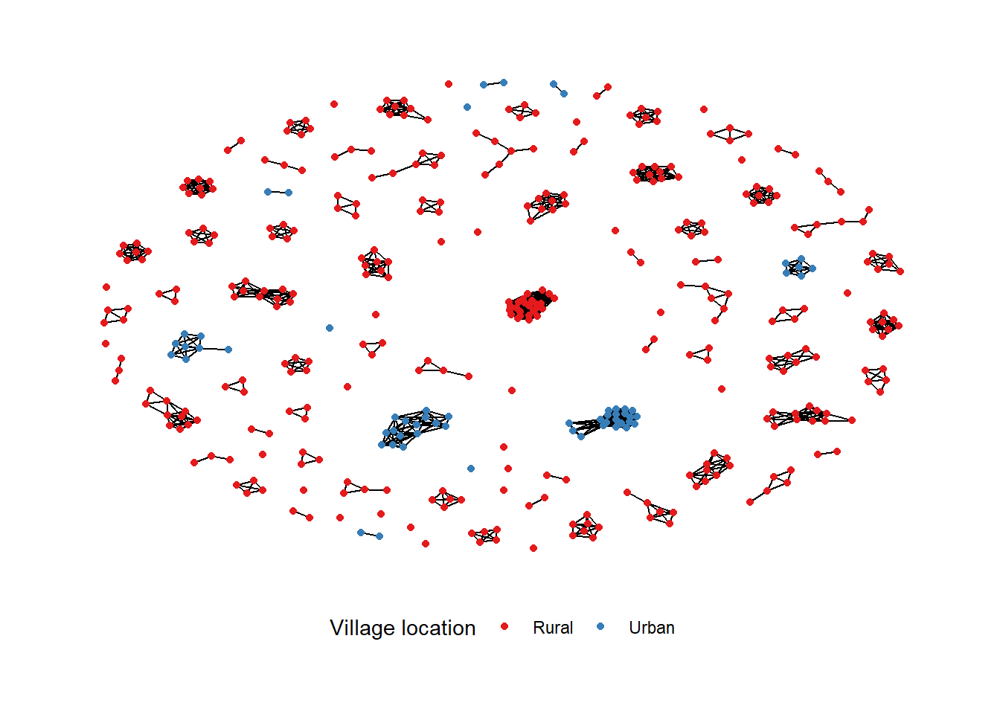
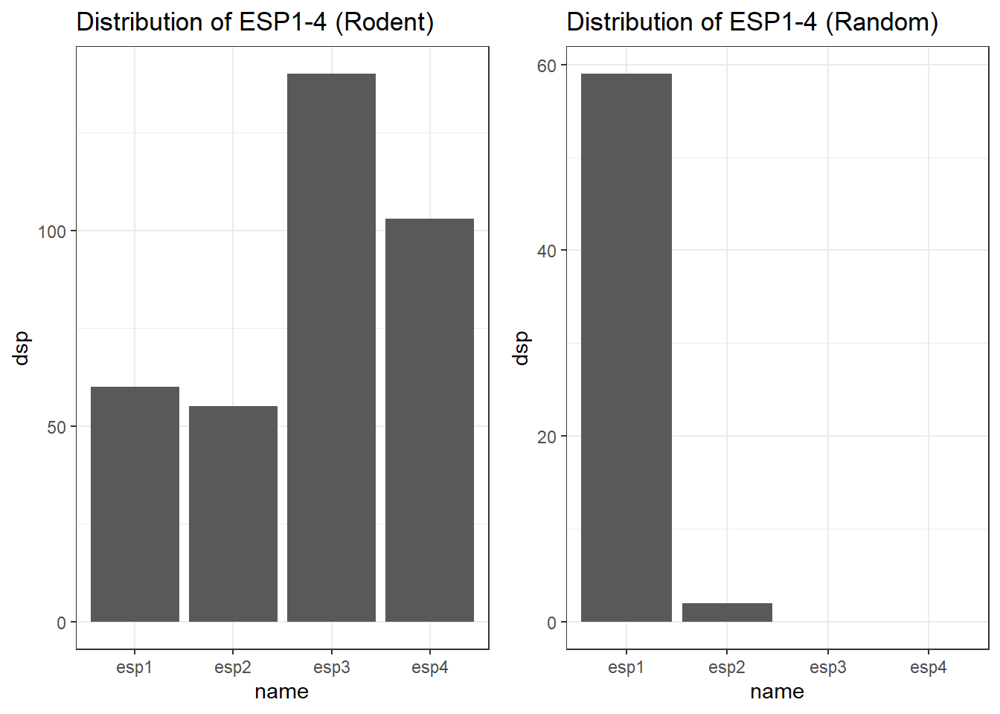

source(here::here("R", "setup.R"))Loading required package: pacmangraph_landuse <- read_rds(here("data", "graphs_landuse.rds"))Load packages and data.
source(here::here("R", "setup.R"))Loading required package: pacmangraph_landuse <- read_rds(here("data", "graphs_landuse.rds"))Convert the data to graph and network objects. Species with less than 10 individuals will be grouped as Other. The period of trapping is converted to the Dry or Wet season and village_loc is produced to code for Urban and Rural villages.
rodent_graph <- bind_graphs(graph_landuse$agriculture, graph_landuse$secondary_forest, graph_landuse$village)
# Species with more than 10 nodes
retain_rodents <- names(table(V(rodent_graph)$Species))[table(V(rodent_graph)$Species) > 10]
rodent_graph <- rodent_graph %>%
mutate(Season = case_when(Visit %in% c("1", "2", "5", "6") ~ "Dry",
TRUE ~ "Wet"),
Species = case_when(!Species %in% retain_rodents ~ "Other",
TRUE ~ Species),
Village_loc = case_when(Village == "Lambayama" ~ "Urban",
TRUE ~ "Rural"),
Landuse = case_when(Landuse == "Secondary_forest" ~ "Forest",
TRUE ~ Landuse),
Serostatus = case_when(Serostatus == "Equivocal" ~ "Negative",
TRUE ~ Serostatus))
rodent_graph <- igraph::simplify(as.igraph(rodent_graph))
rodent_net <- asNetwork(rodent_graph)
# Rodent connected is a subgraph of non-isolated nodes
rodent_connected <- as_tbl_graph(rodent_graph) %>%
activate(edges) %>%
filter(from != to) %>%
activate(nodes) %>%
filter(!node_is_isolated())The following is the summary of the network.
options(max.print = 10)
summary(rodent_net)Network attributes:
vertices = 412
directed = FALSE
hyper = FALSE
loops = FALSE
multiple = FALSE
bipartite = FALSE
total edges = 339
missing edges = 0
non-missing edges = 339
density = 0.004003969
Vertex attributes:
Grid:
character valued attribute
attribute summary:
1 2 3 4 5 6 7
87 63 59 49 32 10 112
Landuse:
character valued attribute
attribute summary:
Agriculture Forest Village
259 31 122
Season:
character valued attribute
attribute summary:
Dry Wet
274 138
Serostatus:
character valued attribute
attribute summary:
Negative Positive
392 20
Species:
character valued attribute
attribute summary:
Crocidura spp Lophuromys sikapusi Mastomys natalensis Mus minutoides
83 44 75 35
Mus musculus Other Praomys spp Rattus rattus
41 28 68 38
vertex.names:
character valued attribute
412 valid vertex names
Village:
character valued attribute
attribute summary:
Baiama Bambawo Lalehun Lambayama Seilama
45 13 103 61 190
Village_loc:
character valued attribute
attribute summary:
Rural Urban
351 61
Visit:
character valued attribute
attribute summary:
1 2 3 4 5 6
45 72 58 80 99 58
No edge attributes
Network edgelist matrix:
[,1] [,2]
[1,] 4 7
[2,] 5 11
[3,] 6 8
[4,] 13 18
[5,] 13 19
[ reached getOption("max.print") -- omitted 334 rows ]options(max.print = 500)There are 412 individual rodents, with 339 ties between individuals for an overall density of 0.004. The attributes that will be used will include species, landuse, season, serostatus and village_loc. We have 7 named species, with one other category. The most commonly trapped species were the Crocidura, followed by Mastomys natalensis, Praomys and Lophuromys. The majority of individuals were obtained from Agricultural settings, followed by villages (both inside and outside of homes) with few individuals trapped in the forests. More rodents were trapped in the dry season, than the wet. 20 individuals were positive for Lassa mammarenavirus antibodies.
ggraph(rodent_net, layout = "fr") +
geom_edge_link() +
geom_node_point(aes(colour = Species)) +
scale_colour_brewer(palette = "Dark2") +
theme_graph() +
theme(legend.position = "bottom",
legend.direction = "horizontal")
This produces a species graph which highlights the clustering of Mus musculus and Mastomys natalensis individuals. The majority of individuals do not have ties to any other individuals.
ggraph(rodent_net, layout = "fr") +
geom_edge_link() +
geom_node_point(aes(colour = Village_loc)) +
scale_colour_brewer(palette = "Set1") +
labs(colour = "Village location") +
theme_graph() +
theme(legend.position = "bottom",
legend.direction = "horizontal")
This graph highlights the locations of the villages from where rodents were trapped. The urban village was Lambayama and here rodents were trapped at greater rates in close proximity to others.
ggraph(rodent_net, layout = "fr") +
geom_edge_link() +
geom_node_point(aes(colour = Landuse)) +
scale_colour_brewer(palette = "Set2") +
theme_graph() +
theme(legend.position = "bottom",
legend.direction = "horizontal")
The largest component of the network are from rodents trapped in agricultural settings, with smaller components from villages. The largest component from the forest is 3 individuals.
ggraph(rodent_net, layout = "fr") +
geom_edge_link() +
geom_node_point(aes(colour = Serostatus)) +
scale_colour_brewer(palette = "Set2") +
theme_graph() +
theme(legend.position = "bottom",
legend.direction = "horizontal")
Finally this graph shows the ties between individuals and their serostatus.
# Network descriptives
rodent_net_descriptives <- list("mean_degree" = mean(degree(rodent_net, gmode = "graph")),
"sd_degree" = sd(degree(rodent_net, gmode = "graph")),
"degree_table" = table(degree(rodent_net, gmode = "graph")),
"triad_table" = triad.census(rodent_net, mode = "graph"),
"density" = graph.density(asIgraph(rodent_net)))
rodent_net_descriptives$mean_degree
[1] 1.645631
$sd_degree
[1] 2.21599
$degree_table
0 1 2 3 4 5 6 7 8 9 10 11
157 111 60 21 19 7 15 10 5 1 2 4
$triad_table
0 1 2 3
[1,] 11432906 137590 172 352
$density
[1] 0.004003969The mean degree of the graph is 1.6, with a standard deviation of 2.2, the majority of the nodes (157) have a degree of 0. This is consistent with the 11 million potential triads not containing a tie.
We can construct a random graph with the same number of nodes and tie density to investigate the distribution of degree in the rodent data compared to a random network of similar characteristics.
# Random graph of similar size and density
randomg <- rgraph(412, m = 1, tprob = rodent_net_descriptives$density, mode = "graph")
random_net <- as.network(randomg, directed = FALSE)
# Comparing distribution of degree between rodent network and random graph
plot_grid(plotlist = list(random = tibble("degree" = degree(random_net, gmode = "graph")) %>%
ggplot() +
geom_bar(aes(x = degree)) +
labs(title = "Distribution of degree (Random)") +
theme_bw(),
rodent = tibble("degree" = degree(rodent_net, gmode = "graph")) %>%
ggplot() +
geom_bar(aes(x = degree)) +
labs(title = "Distribution of degree (Rodent)") +
theme_bw()))
This shows that more isolated nodes are present than would be expected with a longer right tail of higher degree nodes.
Comparing dyadwise and edgewise shared partner distributions can highlight the clustering in the rodent network.
null_random <- ergm(random_net ~ edges)Starting maximum pseudolikelihood estimation (MPLE):Evaluating the predictor and response matrix.Maximizing the pseudolikelihood.Finished MPLE.Stopping at the initial estimate.Evaluating log-likelihood at the estimate. gof_null_random <- gof(null_random, GOF = ~ degree + distance + espartners + dspartners)
rodent_esp <- ergm(rodent_net ~ edges)Starting maximum pseudolikelihood estimation (MPLE):
Evaluating the predictor and response matrix.
Maximizing the pseudolikelihood.
Finished MPLE.
Stopping at the initial estimate.
Evaluating log-likelihood at the estimate. gof_rodent_esp <- gof(rodent_esp, GOF = ~ degree + distance + espartners + dspartners)
rodent_dsp <- tibble(name = names(gof_rodent_esp$obs.dspart[2:5]),
dsp = gof_rodent_esp$obs.dspart[2:5]) %>%
ggplot() +
geom_col(aes(x = name, y = dsp)) +
labs(title = "Distribution of DSP1-4 (Rodent)") +
theme_bw()
random_dsp <- tibble(name = names(gof_null_random$obs.dspart[2:5]),
dsp = gof_null_random$obs.dspart[2:5]) %>%
ggplot() +
geom_col(aes(x = name, y = dsp)) +
labs(title = "Distribution of DSP1-4 (Random)") +
theme_bw()
plot_grid(rodent_dsp, random_dsp) 
rodent_esp <- tibble(name = names(gof_rodent_esp$obs.espart[2:5]),
dsp = gof_rodent_esp$obs.espart[2:5]) %>%
ggplot() +
geom_col(aes(x = name, y = dsp)) +
labs(title = "Distribution of ESP1-4 (Rodent)") +
theme_bw()
random_esp <- tibble(name = names(gof_null_random$obs.espart[2:5]),
dsp = gof_null_random$obs.espart[2:5]) %>%
ggplot() +
geom_col(aes(x = name, y = dsp)) +
labs(title = "Distribution of ESP1-4 (Random)") +
theme_bw()
plot_grid(rodent_esp, random_esp) 
The observed rodent network has more network members with multiple DSP and ESP compared with the random network. The clustering can also be seen by looking at the mixing matrices.
mixingmatrix(rodent_net, "Species") Crocidura spp Lophuromys sikapusi Mastomys natalensis
Crocidura spp 16 16 10
Lophuromys sikapusi 16 10 4
Mastomys natalensis 10 4 34
Mus minutoides 8 6 3
Mus musculus 6 0 0
Other 2 3 5
Praomys spp 21 14 6
Rattus rattus 2 0 14
Mus minutoides Mus musculus Other Praomys spp Rattus rattus
Crocidura spp 8 6 2 21 2
Lophuromys sikapusi 6 0 3 14 0
Mastomys natalensis 3 0 5 6 14
Mus minutoides 5 0 0 20 0
Mus musculus 0 69 0 0 0
Other 0 0 1 4 1
Praomys spp 20 0 4 42 6
Rattus rattus 0 0 1 6 11Note: Marginal totals can be misleading for undirected mixing matrices.mixingmatrix(rodent_net, "Village_loc") Rural Urban
Rural 260 0
Urban 0 79Note: Marginal totals can be misleading for undirected mixing matrices.mixingmatrix(rodent_net, "Landuse") Agriculture Forest Village
Agriculture 211 0 0
Forest 0 9 0
Village 0 0 119Note: Marginal totals can be misleading for undirected mixing matrices.mixingmatrix(rodent_net, "Serostatus") Negative Positive
Negative 321 17
Positive 17 1Note: Marginal totals can be misleading for undirected mixing matrices.We can investigate the effect of node characteristics on degree. Of primary interest is the effect of species.
species <- rodent_net %v% "Species"
deg <- degree(rodent_net)
tibble(Species = species,
Degree = deg) %>%
group_by(Species) %>%
summarise(Degree = mean(Degree)) %>%
ungroup() %>%
arrange(-Degree) %>%
mutate(Species = fct_inorder(Species)) %>%
ggplot() +
geom_point(aes(x = Species, y = Degree)) +
labs(title = "Mean degree by species") +
coord_flip() +
theme_bw()
The species with the highest mean degree is Mus.
We can build a model by iteratively adding further complexity to address the following hypotheses.
source(here("R", "modified_functions.R"))
summary.ergm.david(null_random)Call:
ergm(formula = random_net ~ edges)
Maximum Likelihood Results:
Estimate Std. Error MCMC % Wald OR Lower Upper Pr(>|z|)
edges -5.47582 0.05334 0 -102.7 0.004 0.004 0.005 <1e-04 ***
---
Signif. codes: 0 '***' 0.001 '**' 0.01 '*' 0.05 '.' 0.1 ' ' 1
Null Deviance: 117372 on 84666 degrees of freedom
Residual Deviance: 4573 on 84665 degrees of freedom
AIC: 4575 BIC: 4585 (Smaller is better. MC Std. Err. = 0)null_rodent <- ergm(rodent_net ~ edges)Starting maximum pseudolikelihood estimation (MPLE):Evaluating the predictor and response matrix.Maximizing the pseudolikelihood.Finished MPLE.Stopping at the initial estimate.Evaluating log-likelihood at the estimate. summary.ergm.david(null_rodent)Call:
ergm(formula = rodent_net ~ edges)
Maximum Likelihood Results:
Estimate Std. Error MCMC % Wald OR Lower Upper Pr(>|z|)
edges -5.51646 0.05442 0 -101.4 0.004 0.004 0.004 <1e-04 ***
---
Signif. codes: 0 '***' 0.001 '**' 0.01 '*' 0.05 '.' 0.1 ' ' 1
Null Deviance: 117372 on 84666 degrees of freedom
Residual Deviance: 4420 on 84665 degrees of freedom
AIC: 4422 BIC: 4431 (Smaller is better. MC Std. Err. = 0)main_effects_1 <- ergm(rodent_net ~ edges + nodefactor("Species", levels = c("Crocidura spp", "Mastomys natalensis", "Praomys spp", "Lophuromys sikapusi", "Mus musculus", "Rattus rattus", "Mus minutoides")))Starting maximum pseudolikelihood estimation (MPLE):
Evaluating the predictor and response matrix.
Maximizing the pseudolikelihood.
Finished MPLE.
Stopping at the initial estimate.
Evaluating log-likelihood at the estimate. summary.ergm.david(main_effects_1)Call:
ergm(formula = rodent_net ~ edges + nodefactor("Species", levels = c("Crocidura spp",
"Mastomys natalensis", "Praomys spp", "Lophuromys sikapusi",
"Mus musculus", "Rattus rattus", "Mus minutoides")))
Maximum Likelihood Results:
Estimate Std. Error MCMC % Wald OR
edges -7.5206 0.4827 0 -15.581 0.001
nodefactor.Species.Crocidura spp 0.6574 0.2633 0 2.496 1.930
nodefactor.Species.Mastomys natalensis 0.8858 0.2610 0 3.394 2.425
nodefactor.Species.Praomys spp 1.3304 0.2559 0 5.198 3.782
nodefactor.Species.Lophuromys sikapusi 0.8616 0.2738 0 3.147 2.367
nodefactor.Species.Mus musculus 1.7682 0.2570 0 6.879 5.860
nodefactor.Species.Rattus rattus 0.6706 0.2852 0 2.352 1.955
nodefactor.Species.Mus minutoides 0.7971 0.2835 0 2.811 2.219
Lower Upper Pr(>|z|)
edges 0.000 0.001 < 1e-04 ***
nodefactor.Species.Crocidura spp 1.152 3.233 0.01255 *
nodefactor.Species.Mastomys natalensis 1.454 4.045 0.00069 ***
nodefactor.Species.Praomys spp 2.290 6.246 < 1e-04 ***
nodefactor.Species.Lophuromys sikapusi 1.384 4.048 0.00165 **
nodefactor.Species.Mus musculus 3.541 9.699 < 1e-04 ***
nodefactor.Species.Rattus rattus 1.118 3.420 0.01869 *
nodefactor.Species.Mus minutoides 1.273 3.868 0.00493 **
---
Signif. codes: 0 '***' 0.001 '**' 0.01 '*' 0.05 '.' 0.1 ' ' 1
Null Deviance: 117372 on 84666 degrees of freedom
Residual Deviance: 4291 on 84658 degrees of freedom
AIC: 4307 BIC: 4382 (Smaller is better. MC Std. Err. = 0)main_effects_2 <- ergm(rodent_net ~ edges + nodefactor("Serostatus", levels = c("Positive")))Starting maximum pseudolikelihood estimation (MPLE):
Evaluating the predictor and response matrix.
Maximizing the pseudolikelihood.
Finished MPLE.
Stopping at the initial estimate.
Evaluating log-likelihood at the estimate. summary.ergm.david(main_effects_2)Call:
ergm(formula = rodent_net ~ edges + nodefactor("Serostatus",
levels = c("Positive")))
Maximum Likelihood Results:
Estimate Std. Error MCMC % Wald OR Lower
edges -5.47352 0.05598 0 -97.78 0.004 0.004
nodefactor.Serostatus.Positive -0.57364 0.23315 0 -2.46 0.563 0.357
Upper Pr(>|z|)
edges 0.005 <1e-04 ***
nodefactor.Serostatus.Positive 0.890 0.0139 *
---
Signif. codes: 0 '***' 0.001 '**' 0.01 '*' 0.05 '.' 0.1 ' ' 1
Null Deviance: 117372 on 84666 degrees of freedom
Residual Deviance: 4412 on 84664 degrees of freedom
AIC: 4416 BIC: 4435 (Smaller is better. MC Std. Err. = 0)The first model is the random model, which matches the null rodent model for the Odds of a tie forming. Subsequent models are the simplest model for each of the hypotheses presented above:
The probability of ties between network members can be calculated.
simple_species_1 <- plogis(q = (-7.52 * 1 + 1.77 * 2))
simple_species_2 <- plogis(q = (-7.52 * 1 + 1.77 * 1 + 0.89 * 1))
simple_species_3 <- plogis(q = (-7.52 * 1 + 0.89 * 2))
simple_serostatus_1 <- plogis(q = (-5.47 * 1))
simple_serostatus_2 <- plogis(q = (-5.47 * 1 + -0.574 * 1))
simple_serostatus_3 <- plogis(q = (-5.47 * 1 + -0.574 * 2))These models are overly simplistic as they do not count for homophily which is important in this context.
Continuing to assume dyadic independence we can add differential homophily terms to the models.
homophily_1 <- ergm(rodent_net ~ edges + nodefactor("Species", levels = c("Crocidura spp", "Mastomys natalensis", "Praomys spp", "Lophuromys sikapusi", "Mus musculus", "Rattus rattus", "Mus minutoides")) + nodematch("Species", levels = c("Crocidura spp", "Mastomys natalensis", "Praomys spp", "Lophuromys sikapusi", "Mus musculus", "Rattus rattus", "Mus minutoides"), diff = TRUE))Starting maximum pseudolikelihood estimation (MPLE):Evaluating the predictor and response matrix.Maximizing the pseudolikelihood.Finished MPLE.Stopping at the initial estimate.Evaluating log-likelihood at the estimate. summary.ergm.david(homophily_1)Call:
ergm(formula = rodent_net ~ edges + nodefactor("Species", levels = c("Crocidura spp",
"Mastomys natalensis", "Praomys spp", "Lophuromys sikapusi",
"Mus musculus", "Rattus rattus", "Mus minutoides")) + nodematch("Species",
levels = c("Crocidura spp", "Mastomys natalensis", "Praomys spp",
"Lophuromys sikapusi", "Mus musculus", "Rattus rattus",
"Mus minutoides"), diff = TRUE))
Maximum Likelihood Results:
Estimate Std. Error MCMC % Wald
edges -6.90222 0.48158 0 -14.333
nodefactor.Species.Crocidura spp 0.51431 0.28327 0 1.816
nodefactor.Species.Mastomys natalensis 0.05842 0.29496 0 0.198
nodefactor.Species.Praomys spp 0.84526 0.28222 0 2.995
nodefactor.Species.Lophuromys sikapusi 0.62099 0.29417 0 2.111
nodefactor.Species.Mus musculus -1.40910 0.47814 0 -2.947
nodefactor.Species.Rattus rattus 0.06467 0.32547 0 0.199
nodefactor.Species.Mus minutoides 0.67494 0.30006 0 2.249
nodematch.Species.Crocidura spp 0.51849 0.36938 0 1.404
nodematch.Species.Mastomys natalensis 2.39566 0.36684 0 6.530
nodematch.Species.Praomys spp 1.23693 0.30568 0 4.046
nodematch.Species.Lophuromys sikapusi 1.12121 0.45149 0 2.483
nodematch.Species.Mus musculus 7.33313 0.83054 0 8.829
nodematch.Species.Rattus rattus 2.63119 0.52397 0 5.022
nodematch.Species.Mus minutoides 0.78165 0.56489 0 1.384
OR Lower Upper Pr(>|z|)
edges 0.001 0.000 0.003 < 1e-04 ***
nodefactor.Species.Crocidura spp 1.672 0.960 2.914 0.06943 .
nodefactor.Species.Mastomys natalensis 1.060 0.595 1.890 0.84299
nodefactor.Species.Praomys spp 2.329 1.339 4.049 0.00274 **
nodefactor.Species.Lophuromys sikapusi 1.861 1.045 3.312 0.03477 *
nodefactor.Species.Mus musculus 0.244 0.096 0.624 0.00321 **
nodefactor.Species.Rattus rattus 1.067 0.564 2.019 0.84250
nodefactor.Species.Mus minutoides 1.964 1.091 3.536 0.02449 *
nodematch.Species.Crocidura spp 1.679 0.814 3.464 0.16041
nodematch.Species.Mastomys natalensis 10.975 5.348 22.526 < 1e-04 ***
nodematch.Species.Praomys spp 3.445 1.892 6.272 < 1e-04 ***
nodematch.Species.Lophuromys sikapusi 3.069 1.267 7.435 0.01302 *
nodematch.Species.Mus musculus 1530.162 300.447 7793.025 < 1e-04 ***
nodematch.Species.Rattus rattus 13.890 4.974 38.790 < 1e-04 ***
nodematch.Species.Mus minutoides 2.185 0.722 6.612 0.16645
---
Signif. codes: 0 '***' 0.001 '**' 0.01 '*' 0.05 '.' 0.1 ' ' 1
Null Deviance: 117372 on 84666 degrees of freedom
Residual Deviance: 3866 on 84651 degrees of freedom
AIC: 3896 BIC: 4036 (Smaller is better. MC Std. Err. = 0)homophily_2 <- ergm(rodent_net ~ edges + nodefactor("Serostatus", levels = c("Positive")) + nodematch("Serostatus", levels = c("Positive")))Starting maximum pseudolikelihood estimation (MPLE):
Evaluating the predictor and response matrix.
Maximizing the pseudolikelihood.
Finished MPLE.
Stopping at the initial estimate.
Evaluating log-likelihood at the estimate. summary.ergm.david(homophily_2)Call:
ergm(formula = rodent_net ~ edges + nodefactor("Serostatus",
levels = c("Positive")) + nodematch("Serostatus", levels = c("Positive")))
Maximum Likelihood Results:
Estimate Std. Error MCMC % Wald OR Lower
edges -5.47118 0.05593 0 -97.819 0.004 0.004
nodefactor.Serostatus.Positive -0.66043 0.24916 0 -2.651 0.517 0.317
nodematch.Serostatus 1.55029 1.11545 0 1.390 4.713 0.529
Upper Pr(>|z|)
edges 0.005 < 1e-04 ***
nodefactor.Serostatus.Positive 0.842 0.00803 **
nodematch.Serostatus 41.954 0.16458
---
Signif. codes: 0 '***' 0.001 '**' 0.01 '*' 0.05 '.' 0.1 ' ' 1
Null Deviance: 117372 on 84666 degrees of freedom
Residual Deviance: 4411 on 84663 degrees of freedom
AIC: 4417 BIC: 4445 (Smaller is better. MC Std. Err. = 0)The probability of ties between network members can be calculated for the differential homophily models.
homophily_species_4 <- plogis(q = (-6.90 * 1 + -1.41 * 2 + 7.33 * 1))
homophily_species_5 <- plogis(q = (-6.90 * 1 + -1.41 * 1 + 0.058 * 1 + 7.33 * 0 + 2.37 * 0))
homophily_species_6 <- plogis(q = (-6.90 * 1 + 0.058 * 2 + 2.37 * 1))
homophily_serostatus_4 <- plogis(q = (-5.47 * 1 + 1.55 * 1))
homophily_serostatus_5 <- plogis(q = (-5.47 * 1 + -0.66 * 1 + 1.55 * 0))
homophily_serostatus_6 <- plogis(q = (-5.47 * 1 + -0.66 * 2 + 1.55 * 1))Landuse type, village location (Urban/Rural) and Season are likely important components of these models. We can add Landuse type and village location in as nodematch terms as there is expected to be clustering of species or homophily within these locations. Season may or may not be a clustering term as it may be that all species respond to changing seasons in the same way. For the first model season will be added in as nodefactor, and for the second nodematch. The model with the lowest AIC will then be used.
add_terms_species_1 <- ergm(rodent_net ~ edges +
nodefactor("Species", levels = c("Crocidura spp", "Mastomys natalensis", "Praomys spp", "Lophuromys sikapusi", "Mus musculus", "Rattus rattus", "Mus minutoides")) +
nodematch("Species", levels = c("Crocidura spp", "Mastomys natalensis", "Praomys spp", "Lophuromys sikapusi", "Mus musculus", "Rattus rattus", "Mus minutoides"), diff = TRUE) +
nodefactor("Season", levels = "Dry") +
nodematch("Village_loc", levels = "Rural", diff = TRUE) +
nodematch("Landuse", levels = c("Agriculture", "Village"), diff = TRUE))Starting maximum pseudolikelihood estimation (MPLE):Evaluating the predictor and response matrix.Maximizing the pseudolikelihood.Finished MPLE.Stopping at the initial estimate.Evaluating log-likelihood at the estimate. summary.ergm.david(add_terms_species_1)Call:
ergm(formula = rodent_net ~ edges + nodefactor("Species", levels = c("Crocidura spp",
"Mastomys natalensis", "Praomys spp", "Lophuromys sikapusi",
"Mus musculus", "Rattus rattus", "Mus minutoides")) + nodematch("Species",
levels = c("Crocidura spp", "Mastomys natalensis", "Praomys spp",
"Lophuromys sikapusi", "Mus musculus", "Rattus rattus",
"Mus minutoides"), diff = TRUE) + nodefactor("Season",
levels = "Dry") + nodematch("Village_loc", levels = "Rural",
diff = TRUE) + nodematch("Landuse", levels = c("Agriculture",
"Village"), diff = TRUE))
Maximum Likelihood Results:
Estimate Std. Error MCMC % Wald
edges -11.09536 0.77154 0 -14.381
nodefactor.Species.Crocidura spp 0.25999 0.28486 0 0.913
nodefactor.Species.Mastomys natalensis -0.29880 0.29668 0 -1.007
nodefactor.Species.Praomys spp 0.54939 0.28366 0 1.937
nodefactor.Species.Lophuromys sikapusi 0.11980 0.29596 0 0.405
nodefactor.Species.Mus musculus 0.38418 0.70792 0 0.543
nodefactor.Species.Rattus rattus 0.17667 0.34520 0 0.512
nodefactor.Species.Mus minutoides 0.24358 0.30281 0 0.804
nodematch.Species.Crocidura spp 0.51860 0.37046 0 1.400
nodematch.Species.Mastomys natalensis 2.32284 0.37031 0 6.273
nodematch.Species.Praomys spp 1.20905 0.30756 0 3.931
nodematch.Species.Lophuromys sikapusi 1.02382 0.45287 0 2.261
nodematch.Species.Mus musculus 3.82830 0.98195 0 3.899
nodematch.Species.Rattus rattus 0.99764 0.53484 0 1.865
nodematch.Species.Mus minutoides 0.59432 0.56693 0 1.048
nodefactor.Season.Dry 0.31376 0.09256 0 3.390
nodematch.Village_loc.Rural 1.79321 0.50951 0 3.519
nodematch.Landuse.Agriculture 3.12756 0.34596 0 9.040
nodematch.Landuse.Village 3.89481 0.38078 0 10.228
OR Lower Upper Pr(>|z|)
edges 0.000 0.000 0.000 < 1e-04 ***
nodefactor.Species.Crocidura spp 1.297 0.742 2.267 0.361404
nodefactor.Species.Mastomys natalensis 0.742 0.415 1.327 0.313852
nodefactor.Species.Praomys spp 1.732 0.993 3.020 0.052772 .
nodefactor.Species.Lophuromys sikapusi 1.127 0.631 2.014 0.685629
nodefactor.Species.Mus musculus 1.468 0.367 5.881 0.587342
nodefactor.Species.Rattus rattus 1.193 0.607 2.347 0.608789
nodefactor.Species.Mus minutoides 1.276 0.705 2.310 0.421166
nodematch.Species.Crocidura spp 1.680 0.813 3.472 0.161552
nodematch.Species.Mastomys natalensis 10.205 4.938 21.087 < 1e-04 ***
nodematch.Species.Praomys spp 3.350 1.834 6.122 < 1e-04 ***
nodematch.Species.Lophuromys sikapusi 2.784 1.146 6.763 0.023776 *
nodematch.Species.Mus musculus 45.984 6.710 315.110 < 1e-04 ***
nodematch.Species.Rattus rattus 2.712 0.951 7.736 0.062137 .
nodematch.Species.Mus minutoides 1.812 0.596 5.504 0.294496
nodefactor.Season.Dry 1.369 1.142 1.641 0.000699 ***
nodematch.Village_loc.Rural 6.009 2.213 16.311 0.000432 ***
nodematch.Landuse.Agriculture 22.818 11.582 44.955 < 1e-04 ***
nodematch.Landuse.Village 49.146 23.301 103.662 < 1e-04 ***
---
Signif. codes: 0 '***' 0.001 '**' 0.01 '*' 0.05 '.' 0.1 ' ' 1
Null Deviance: 117372 on 84666 degrees of freedom
Residual Deviance: 3563 on 84647 degrees of freedom
AIC: 3601 BIC: 3779 (Smaller is better. MC Std. Err. = 0)add_terms_species_2 <- ergm(rodent_net ~ edges +
nodefactor("Species", levels = c("Crocidura spp", "Mastomys natalensis", "Praomys spp", "Lophuromys sikapusi", "Mus musculus", "Rattus rattus", "Mus minutoides")) +
nodematch("Species", levels = c("Crocidura spp", "Mastomys natalensis", "Praomys spp", "Lophuromys sikapusi", "Mus musculus", "Rattus rattus", "Mus minutoides"), diff = TRUE) +
nodematch("Season", levels = "Dry", diff = TRUE) +
nodematch("Village_loc", levels = "Rural", diff = TRUE) +
nodematch("Landuse", levels = c("Agriculture", "Village"), diff = TRUE))Starting maximum pseudolikelihood estimation (MPLE):
Evaluating the predictor and response matrix.
Maximizing the pseudolikelihood.
Finished MPLE.
Stopping at the initial estimate.
Evaluating log-likelihood at the estimate. summary.ergm.david(add_terms_species_2)Call:
ergm(formula = rodent_net ~ edges + nodefactor("Species", levels = c("Crocidura spp",
"Mastomys natalensis", "Praomys spp", "Lophuromys sikapusi",
"Mus musculus", "Rattus rattus", "Mus minutoides")) + nodematch("Species",
levels = c("Crocidura spp", "Mastomys natalensis", "Praomys spp",
"Lophuromys sikapusi", "Mus musculus", "Rattus rattus",
"Mus minutoides"), diff = TRUE) + nodematch("Season",
levels = "Dry", diff = TRUE) + nodematch("Village_loc", levels = "Rural",
diff = TRUE) + nodematch("Landuse", levels = c("Agriculture",
"Village"), diff = TRUE))
Maximum Likelihood Results:
Estimate Std. Error MCMC % Wald
edges -11.3822 0.7680 0 -14.822
nodefactor.Species.Crocidura spp 0.3789 0.2848 0 1.330
nodefactor.Species.Mastomys natalensis -0.2849 0.2969 0 -0.960
nodefactor.Species.Praomys spp 0.5613 0.2839 0 1.977
nodefactor.Species.Lophuromys sikapusi 0.1472 0.2965 0 0.496
nodefactor.Species.Mus musculus 0.4184 0.7074 0 0.591
nodefactor.Species.Rattus rattus 0.1991 0.3466 0 0.575
nodefactor.Species.Mus minutoides 0.3228 0.3031 0 1.065
nodematch.Species.Crocidura spp 0.5198 0.3709 0 1.401
nodematch.Species.Mastomys natalensis 2.3481 0.3706 0 6.336
nodematch.Species.Praomys spp 1.2223 0.3081 0 3.967
nodematch.Species.Lophuromys sikapusi 1.0024 0.4536 0 2.210
nodematch.Species.Mus musculus 4.0129 0.9816 0 4.088
nodematch.Species.Rattus rattus 0.9623 0.5364 0 1.794
nodematch.Species.Mus minutoides 0.6006 0.5678 0 1.058
nodematch.Season.Dry 1.4181 0.1400 0 10.133
nodematch.Village_loc.Rural 1.4966 0.5101 0 2.934
nodematch.Landuse.Agriculture 3.1286 0.3463 0 9.034
nodematch.Landuse.Village 3.9227 0.3811 0 10.293
OR Lower Upper Pr(>|z|)
edges 0.000 0.000 0.000 < 1e-04 ***
nodefactor.Species.Crocidura spp 1.461 0.836 2.553 0.18350
nodefactor.Species.Mastomys natalensis 0.752 0.420 1.346 0.33723
nodefactor.Species.Praomys spp 1.753 1.005 3.058 0.04804 *
nodefactor.Species.Lophuromys sikapusi 1.159 0.648 2.072 0.61955
nodefactor.Species.Mus musculus 1.519 0.380 6.080 0.55425
nodefactor.Species.Rattus rattus 1.220 0.619 2.407 0.56561
nodefactor.Species.Mus minutoides 1.381 0.762 2.501 0.28690
nodematch.Species.Crocidura spp 1.682 0.813 3.479 0.16113
nodematch.Species.Mastomys natalensis 10.466 5.062 21.639 < 1e-04 ***
nodematch.Species.Praomys spp 3.395 1.856 6.210 < 1e-04 ***
nodematch.Species.Lophuromys sikapusi 2.725 1.120 6.629 0.02713 *
nodematch.Species.Mus musculus 55.309 8.077 378.722 < 1e-04 ***
nodematch.Species.Rattus rattus 2.618 0.915 7.490 0.07282 .
nodematch.Species.Mus minutoides 1.823 0.599 5.549 0.29017
nodematch.Season.Dry 4.129 3.139 5.433 < 1e-04 ***
nodematch.Village_loc.Rural 4.466 1.643 12.138 0.00335 **
nodematch.Landuse.Agriculture 22.841 11.586 45.029 < 1e-04 ***
nodematch.Landuse.Village 50.534 23.944 106.656 < 1e-04 ***
---
Signif. codes: 0 '***' 0.001 '**' 0.01 '*' 0.05 '.' 0.1 ' ' 1
Null Deviance: 117372 on 84666 degrees of freedom
Residual Deviance: 3455 on 84647 degrees of freedom
AIC: 3493 BIC: 3671 (Smaller is better. MC Std. Err. = 0)add_terms_species_3 <- ergm(rodent_net ~ edges +
nodefactor("Species", levels = c("Crocidura spp", "Mastomys natalensis", "Praomys spp", "Lophuromys sikapusi", "Mus musculus", "Rattus rattus", "Mus minutoides")) +
nodematch("Species", levels = c("Crocidura spp", "Mastomys natalensis", "Praomys spp", "Lophuromys sikapusi", "Mus musculus", "Rattus rattus", "Mus minutoides"), diff = TRUE) +
nodematch("Season", levels = "Dry", diff = TRUE) +
nodematch("Village_loc", levels = "Rural", diff = TRUE) +
nodematch("Landuse", levels = c("Agriculture", "Village"), diff = TRUE) +
isolates())Starting maximum pseudolikelihood estimation (MPLE):
Evaluating the predictor and response matrix.
Maximizing the pseudolikelihood.
Finished MPLE.
Starting Monte Carlo maximum likelihood estimation (MCMLE):
Iteration 1 of at most 60:
Optimizing with step length 0.2335.
The log-likelihood improved by 2.1832.
Estimating equations are not within tolerance region.
Iteration 2 of at most 60:
Optimizing with step length 0.4221.
The log-likelihood improved by 1.7729.
Estimating equations are not within tolerance region.
Iteration 3 of at most 60:
Optimizing with step length 0.7529.
The log-likelihood improved by 2.4503.
Estimating equations are not within tolerance region.
Iteration 4 of at most 60:
Optimizing with step length 1.0000.
The log-likelihood improved by 0.9085.
Estimating equations are not within tolerance region.
Iteration 5 of at most 60:
Optimizing with step length 1.0000.
The log-likelihood improved by 0.1081.
Estimating equations are not within tolerance region.
Iteration 6 of at most 60:
Optimizing with step length 1.0000.
The log-likelihood improved by 0.1686.
Estimating equations are not within tolerance region.
Iteration 7 of at most 60:
Optimizing with step length 1.0000.
The log-likelihood improved by 0.7352.
Estimating equations are not within tolerance region.
Estimating equations did not move closer to tolerance region more than 1 time(s) in 4 steps; increasing sample size.
Iteration 8 of at most 60:
Optimizing with step length 1.0000.
The log-likelihood improved by 1.3731.
Estimating equations are not within tolerance region.
Iteration 9 of at most 60:
Optimizing with step length 1.0000.
The log-likelihood improved by 0.2448.
Estimating equations are not within tolerance region.
Iteration 10 of at most 60:
Optimizing with step length 1.0000.
The log-likelihood improved by 0.2894.
Estimating equations are not within tolerance region.
Iteration 11 of at most 60:
Optimizing with step length 1.0000.
The log-likelihood improved by 0.3190.
Estimating equations are not within tolerance region.
Estimating equations did not move closer to tolerance region more than 1 time(s) in 4 steps; increasing sample size.
Iteration 12 of at most 60:
Optimizing with step length 1.0000.
The log-likelihood improved by 0.1580.
Estimating equations are not within tolerance region.
Iteration 13 of at most 60:
Optimizing with step length 1.0000.
The log-likelihood improved by 0.0436.
Convergence test p-value: 0.9992. Not converged with 99% confidence; increasing sample size.
Iteration 14 of at most 60:
Optimizing with step length 1.0000.
The log-likelihood improved by 0.0581.
Convergence test p-value: 0.9824. Not converged with 99% confidence; increasing sample size.
Iteration 15 of at most 60:
Optimizing with step length 1.0000.
The log-likelihood improved by 0.0249.
Convergence test p-value: 0.9006. Not converged with 99% confidence; increasing sample size.
Iteration 16 of at most 60:
Optimizing with step length 1.0000.
The log-likelihood improved by 0.0197.
Convergence test p-value: 0.1832. Not converged with 99% confidence; increasing sample size.
Iteration 17 of at most 60:
Optimizing with step length 1.0000.
The log-likelihood improved by 0.0155.
Convergence test p-value: 0.0040. Converged with 99% confidence.
Finished MCMLE.
Evaluating log-likelihood at the estimate. Fitting the dyad-independent submodel...
Bridging between the dyad-independent submodel and the full model...
Setting up bridge sampling...
Using 16 bridges: 1 2 3 4 5 6 7 8 9 10 11 12 13 14 15 16 .
Bridging finished.
This model was fit using MCMC. To examine model diagnostics and check
for degeneracy, use the mcmc.diagnostics() function.summary.ergm.david(add_terms_species_3)Call:
ergm(formula = rodent_net ~ edges + nodefactor("Species", levels = c("Crocidura spp",
"Mastomys natalensis", "Praomys spp", "Lophuromys sikapusi",
"Mus musculus", "Rattus rattus", "Mus minutoides")) + nodematch("Species",
levels = c("Crocidura spp", "Mastomys natalensis", "Praomys spp",
"Lophuromys sikapusi", "Mus musculus", "Rattus rattus",
"Mus minutoides"), diff = TRUE) + nodematch("Season",
levels = "Dry", diff = TRUE) + nodematch("Village_loc", levels = "Rural",
diff = TRUE) + nodematch("Landuse", levels = c("Agriculture",
"Village"), diff = TRUE) + isolates())
Monte Carlo Maximum Likelihood Results:
Estimate Std. Error MCMC % Wald
edges -9.87261 0.74451 0 -13.260
nodefactor.Species.Crocidura spp 0.24284 0.25420 0 0.955
nodefactor.Species.Mastomys natalensis -0.41497 0.26711 0 -1.554
nodefactor.Species.Praomys spp 0.32512 0.25390 0 1.281
nodefactor.Species.Lophuromys sikapusi 0.03628 0.26320 0 0.138
nodefactor.Species.Mus musculus -0.33867 0.67966 0 -0.498
nodefactor.Species.Rattus rattus 0.08885 0.30974 0 0.287
nodefactor.Species.Mus minutoides 0.20587 0.26696 0 0.771
nodematch.Species.Crocidura spp 0.52790 0.37424 0 1.411
nodematch.Species.Mastomys natalensis 2.32091 0.37483 0 6.192
nodematch.Species.Praomys spp 1.21621 0.30505 0 3.987
nodematch.Species.Lophuromys sikapusi 1.01413 0.44501 0 2.279
nodematch.Species.Mus musculus 4.32228 0.96548 0 4.477
nodematch.Species.Rattus rattus 0.94864 0.51671 0 1.836
nodematch.Species.Mus minutoides 0.61480 0.58292 0 1.055
nodematch.Season.Dry 1.11737 0.13556 0 8.243
nodematch.Village_loc.Rural 1.11932 0.47311 0 2.366
nodematch.Landuse.Agriculture 2.87013 0.34399 0 8.344
nodematch.Landuse.Village 3.75719 0.37299 0 10.073
isolates 0.93015 0.17817 0 5.221
OR Lower Upper Pr(>|z|)
edges 0.000 0.000 0.000 <1e-04 ***
nodefactor.Species.Crocidura spp 1.275 0.775 2.098 0.3394
nodefactor.Species.Mastomys natalensis 0.660 0.391 1.115 0.1203
nodefactor.Species.Praomys spp 1.384 0.842 2.277 0.2004
nodefactor.Species.Lophuromys sikapusi 1.037 0.619 1.737 0.8904
nodefactor.Species.Mus musculus 0.713 0.188 2.701 0.6183
nodefactor.Species.Rattus rattus 1.093 0.596 2.006 0.7742
nodefactor.Species.Mus minutoides 1.229 0.728 2.073 0.4406
nodematch.Species.Crocidura spp 1.695 0.814 3.530 0.1584
nodematch.Species.Mastomys natalensis 10.185 4.885 21.234 <1e-04 ***
nodematch.Species.Praomys spp 3.374 1.856 6.136 <1e-04 ***
nodematch.Species.Lophuromys sikapusi 2.757 1.152 6.595 0.0227 *
nodematch.Species.Mus musculus 75.360 11.358 500.003 <1e-04 ***
nodematch.Species.Rattus rattus 2.582 0.938 7.109 0.0664 .
nodematch.Species.Mus minutoides 1.849 0.590 5.797 0.2916
nodematch.Season.Dry 3.057 2.344 3.987 <1e-04 ***
nodematch.Village_loc.Rural 3.063 1.212 7.742 0.0180 *
nodematch.Landuse.Agriculture 17.639 8.988 34.617 <1e-04 ***
nodematch.Landuse.Village 42.828 20.617 88.966 <1e-04 ***
isolates 2.535 1.788 3.594 <1e-04 ***
---
Signif. codes: 0 '***' 0.001 '**' 0.01 '*' 0.05 '.' 0.1 ' ' 1
Null Deviance: 117372 on 84666 degrees of freedom
Residual Deviance: 3428 on 84646 degrees of freedom
AIC: 3468 BIC: 3655 (Smaller is better. MC Std. Err. = 0.1499)#
# add_terms_species_4 <- ergm(rodent_net ~ edges +
# nodefactor("Species", levels = c("Crocidura spp", "Mastomys natalensis", "Praomys spp", "Lophuromys sikapusi", "Mus musculus", "Rattus rattus", "Mus minutoides")) +
# nodematch("Species", levels = c("Crocidura spp", "Mastomys natalensis", "Praomys spp", "Lophuromys sikapusi", "Mus musculus", "Rattus rattus", "Mus minutoides"), diff = TRUE) +
# nodematch("Season", levels = "Dry", diff = TRUE) +
# nodematch("Village_loc", levels = "Rural", diff = TRUE) +
# nodematch("Landuse", levels = c("Agriculture", "Village"), diff = TRUE) +
# dsp(d = 1:4))
# summary.ergm.david(add_terms_species_4)
add_terms_serology_1 <- ergm(rodent_net ~ edges +
nodefactor("Serostatus", levels = c("Positive")) +
nodematch("Serostatus", levels = c("Positive")) +
nodefactor("Season", levels = "Dry") +
nodematch("Village_loc", levels = "Rural", diff = TRUE) +
nodematch("Landuse", levels = c("Agriculture", "Village"), diff = TRUE))Starting maximum pseudolikelihood estimation (MPLE):
Evaluating the predictor and response matrix.
Maximizing the pseudolikelihood.
Finished MPLE.
Stopping at the initial estimate.
Evaluating log-likelihood at the estimate. summary.ergm.david(add_terms_serology_1)Call:
ergm(formula = rodent_net ~ edges + nodefactor("Serostatus",
levels = c("Positive")) + nodematch("Serostatus", levels = c("Positive")) +
nodefactor("Season", levels = "Dry") + nodematch("Village_loc",
levels = "Rural", diff = TRUE) + nodematch("Landuse", levels = c("Agriculture",
"Village"), diff = TRUE))
Maximum Likelihood Results:
Estimate Std. Error MCMC % Wald OR Lower
edges -8.90632 0.36343 0 -24.506 0.000 0.000
nodefactor.Serostatus.Positive -0.72431 0.25074 0 -2.889 0.485 0.296
nodematch.Serostatus 1.60962 1.11969 0 1.438 5.001 0.557
nodefactor.Season.Dry 0.12515 0.08805 0 1.421 1.133 0.954
nodematch.Village_loc.Rural 0.41536 0.15681 0 2.649 1.515 1.114
nodematch.Landuse.Agriculture 3.34100 0.34143 0 9.785 28.247 14.466
nodematch.Landuse.Village 4.51752 0.34819 0 12.974 91.608 46.297
Upper Pr(>|z|)
edges 0.000 < 1e-04 ***
nodefactor.Serostatus.Positive 0.792 0.00387 **
nodematch.Serostatus 44.890 0.15056
nodefactor.Season.Dry 1.347 0.15520
nodematch.Village_loc.Rural 2.060 0.00808 **
nodematch.Landuse.Agriculture 55.158 < 1e-04 ***
nodematch.Landuse.Village 181.265 < 1e-04 ***
---
Signif. codes: 0 '***' 0.001 '**' 0.01 '*' 0.05 '.' 0.1 ' ' 1
Null Deviance: 117372 on 84666 degrees of freedom
Residual Deviance: 3925 on 84659 degrees of freedom
AIC: 3939 BIC: 4005 (Smaller is better. MC Std. Err. = 0)add_terms_serology_2 <- ergm(rodent_net ~ edges +
nodefactor("Serostatus", levels = c("Positive")) +
nodematch("Serostatus", levels = c("Positive")) +
nodematch("Season", levels = "Dry", diff = TRUE) +
nodematch("Village_loc", levels = "Rural", diff = TRUE) +
nodematch("Landuse", levels = c("Agriculture", "Village"), diff = TRUE))Starting maximum pseudolikelihood estimation (MPLE):
Evaluating the predictor and response matrix.
Maximizing the pseudolikelihood.
Finished MPLE.
Stopping at the initial estimate.
Evaluating log-likelihood at the estimate. summary.ergm.david(add_terms_serology_2)Call:
ergm(formula = rodent_net ~ edges + nodefactor("Serostatus",
levels = c("Positive")) + nodematch("Serostatus", levels = c("Positive")) +
nodematch("Season", levels = "Dry", diff = TRUE) + nodematch("Village_loc",
levels = "Rural", diff = TRUE) + nodematch("Landuse", levels = c("Agriculture",
"Village"), diff = TRUE))
Maximum Likelihood Results:
Estimate Std. Error MCMC % Wald OR Lower
edges -9.14656 0.35608 0 -25.687 0.000 0.000
nodefactor.Serostatus.Positive -0.60038 0.25066 0 -2.395 0.549 0.336
nodematch.Serostatus 1.65640 1.12141 0 1.477 5.240 0.582
nodematch.Season.Dry 1.13171 0.12497 0 9.056 3.101 2.427
nodematch.Village_loc.Rural 0.06268 0.15794 0 0.397 1.065 0.781
nodematch.Landuse.Agriculture 3.37595 0.34169 0 9.880 29.252 14.973
nodematch.Landuse.Village 4.51723 0.34834 0 12.968 91.582 46.270
Upper Pr(>|z|)
edges 0.000 <1e-04 ***
nodefactor.Serostatus.Positive 0.897 0.0166 *
nodematch.Serostatus 47.199 0.1397
nodematch.Season.Dry 3.962 <1e-04 ***
nodematch.Village_loc.Rural 1.451 0.6915
nodematch.Landuse.Agriculture 57.149 <1e-04 ***
nodematch.Landuse.Village 181.269 <1e-04 ***
---
Signif. codes: 0 '***' 0.001 '**' 0.01 '*' 0.05 '.' 0.1 ' ' 1
Null Deviance: 117372 on 84666 degrees of freedom
Residual Deviance: 3837 on 84659 degrees of freedom
AIC: 3851 BIC: 3916 (Smaller is better. MC Std. Err. = 0)For both of these more complex models the inclusion of the additional terms as differential homophily terms improves model fit. We can repeat the above equations to calculate the probability of a tie.
The probability of ties between network members can be calculated for the differential homophily models.
These probabilities show that two Mus musculus in urban village settings have the greatest odds of coming into contact with another individual of the same species, this is much greater than the rates of contacts between a Mus musculus and a Mastomys natalensis as well as the contact rates between two Mastomys natalensis all other things being equal. We also see that two Mastomys natalensis have greater odds of contact within the rural villages compared to urban villages, and within the village compared to in agricultural land.
These probabilities show that the odds of contact between negative rodents is much greater (driven by the finding that most rodents are negative), than that involving a positive rodent. The probabilities of contact among positive rodents within both an urban setting and rural setting are similar.
homophily_species_7 <- plogis(q = (-11.38 * 1 + 0.42 * 2 + 4.01 * 1 + 1.42 * 1 + 3.92 * 1))
homophily_species_8 <- plogis(q = (-11.38 * 1 + 0.42 * 1 + -0.28 * 1 + 1.42 * 1 + 3.92 * 1))
homophily_species_9 <- plogis(q = (-11.38 * 1 + 0.42 * 1 + -0.28 * 1 + 1.5 * 1 + 1.42 * 1 + 3.92 * 1))
homophily_species_10 <- plogis(q = (-11.38 * 1 + -0.28 * 2 + 2.34 * 1 + 1.42 * 1 + 3.92 * 1))
homophily_species_11 <- plogis(q = (-11.38 * 1 + -0.28 * 2 + 2.34 * 1 + 1.5 * 1 + 1.42 * 1 + 3.92 * 1))
homophily_species_12 <- plogis(q = (-11.38 * 1 + -0.28 * 2 + 2.34 * 1 + 1.5 * 1 + 1.42 * 1 + 3.12 * 1))
homophily_serostatus_7 <- plogis(q = (-9.15 * 1 + 1.66 * 1 + 1.13 * 1 + 4.51 * 1))
homophily_serostatus_8 <- plogis(q = (-9.15 * 1 + -0.6 * 1 + 1.13 * 1 + 4.51 * 1))
homophily_serostatus_9 <- plogis(q = (-9.15 * 1 + -0.6 * 2 + 1.13 * 1 + 4.51 * 1))
homophily_serostatus_10 <- plogis(q = (-9.15 * 1 + 1.66 * 1 + 0.06 * 1 + 1.13 * 1 + 4.51 * 1))
homophily_serostatus_11 <- plogis(q = (-9.15 * 1 + -0.6 * 1 + 0.06 * 1 + 1.13 * 1 + 4.51 * 1))
homophily_serostatus_12 <- plogis(q = (-9.15 * 1 + -0.6 * 2 + 0.06 * 1 + 1.13 * 1 + 4.51 * 1))The models so far assume dyadic independence. We can test the fit of these models through various means. First for the species tie model.
# First simulate the models
null_sim <- simulate(null_random, verbose = TRUE, seed = 123)Initializing unconstrained Metropolis-Hastings proposal: 'ergm:MH_TNT'.
Initializing model...
Model initialized.
Starting MCMC iterations to generate 1 networkmain_1_sim <- simulate(main_effects_1, verbose = TRUE, seed = 123)Initializing unconstrained Metropolis-Hastings proposal: 'ergm:MH_TNT'.
Initializing model...
Model initialized.
Starting MCMC iterations to generate 1 networkhomophily_1_sim <- simulate(homophily_1, verbose = TRUE, seed = 123)Initializing unconstrained Metropolis-Hastings proposal: 'ergm:MH_TNT'.
Initializing model...
Model initialized.
Starting MCMC iterations to generate 1 networkcomplex_sim_1 <- simulate(add_terms_species_1, verbose = TRUE, seed = 123)Initializing unconstrained Metropolis-Hastings proposal: 'ergm:MH_TNT'.
Initializing model...
Model initialized.
Starting MCMC iterations to generate 1 networkcomplex_sim_2 <- simulate(add_terms_species_2, verbose = TRUE, seed = 123)Initializing unconstrained Metropolis-Hastings proposal: 'ergm:MH_TNT'.
Initializing model...
Model initialized.
Starting MCMC iterations to generate 1 networkcomplex_sim_3 <- simulate(add_terms_species_3, verbose = TRUE, seed = 123)Initializing unconstrained Metropolis-Hastings proposal: 'ergm:MH_TNT'.
Initializing model...
Model initialized.
Starting MCMC iterations to generate 1 networkrow_gof <- rbind(summary(rodent_net ~ edges + degree(0:5) + triangle),
summary(null_sim ~ edges + degree(0:5) + triangle),
summary(main_1_sim ~ edges + degree(0:5) + triangle),
summary(homophily_1_sim ~ edges + degree(0:5) + triangle),
summary(complex_sim_1 ~ edges + degree(0:5) + triangle),
summary(complex_sim_2 ~ edges + degree(0:5) + triangle),
summary(complex_sim_3 ~ edges + degree(0:5) + triangle))
bind_cols(model = c("Observed network", "Null model", "Main effects only", "Homophily only", "Differential homophily and terms 1", "Differential homophily and terms 2", "Differential homophily and isolates"), row_gof,
aic = c(NA, AIC(null_random)[1], AIC(main_effects_1)[1], AIC(homophily_1)[1], AIC(add_terms_species_1)[1], AIC(add_terms_species_2)[1],
AIC(add_terms_species_3)[1]),
bic = c(NA, BIC(null_random)[1], BIC(main_effects_1)[1], BIC(homophily_1)[1], BIC(add_terms_species_1)[1], BIC(add_terms_species_2)[1],
BIC(add_terms_species_3)[1]))# A tibble: 7 x 11
model edges degree0 degree1 degree2 degree3 degree4 degree5 trian~1 aic
<chr> <dbl> <dbl> <dbl> <dbl> <dbl> <dbl> <dbl> <dbl> <dbl>
1 Observed ~ 339 157 111 60 21 19 7 352 NA
2 Null model 326 99 121 91 70 22 5 1 4575.
3 Main effe~ 337 99 126 91 47 29 16 0 4307.
4 Homophily~ 308 97 152 86 44 17 9 4 3896.
5 Different~ 328 120 101 94 49 29 12 11 3601.
6 Different~ 314 139 91 83 53 28 11 7 3493.
7 Different~ 349 162 76 58 41 27 29 21 3468.
# ... with 1 more variable: bic <dbl>, and abbreviated variable name
# 1: triangleThis summarises the simulations from the different models compared to the observed network alongside showing the reducing AIC/BIC as homophily and additional terms are added. These models fail to capture the number of triangles and low degree nodes within the observed network. However, adding dependence terms including GWdegree, GWESP and GWDSP results in a degenerate model.
This does not work for the complete model. Despite several attempts and leaving for several days.
# cefmodel_species <- ergm(rodent_net ~ edges +
# nodefactor("Species", levels = c("Crocidura spp", "Mastomys natalensis", "Praomys spp", "Lophuromys sikapusi", "Mus musculus", "Rattus rattus", "Mus minutoides")) +
# nodematch("Species", levels = c("Crocidura spp", "Mastomys natalensis", "Praomys spp", "Lophuromys sikapusi", "Mus musculus", "Rattus rattus", "Mus minutoides"), diff = TRUE) +
# nodematch("Season", levels = "Dry", diff = TRUE) +
# nodematch("Village_loc", levels = "Rural", diff = TRUE) +
# nodematch("Landuse", levels = c("Agriculture", "Village"), diff = TRUE) +
# gwdegree(cutoff = 5) +
# gwesp(cutoff = 5) +
# gwdsp(cutoff = 5),
# eval.loglik = TRUE,
# verbose = TRUE)
# write_rds(cefmodel_species, here("temp", "cef_species.rds"))